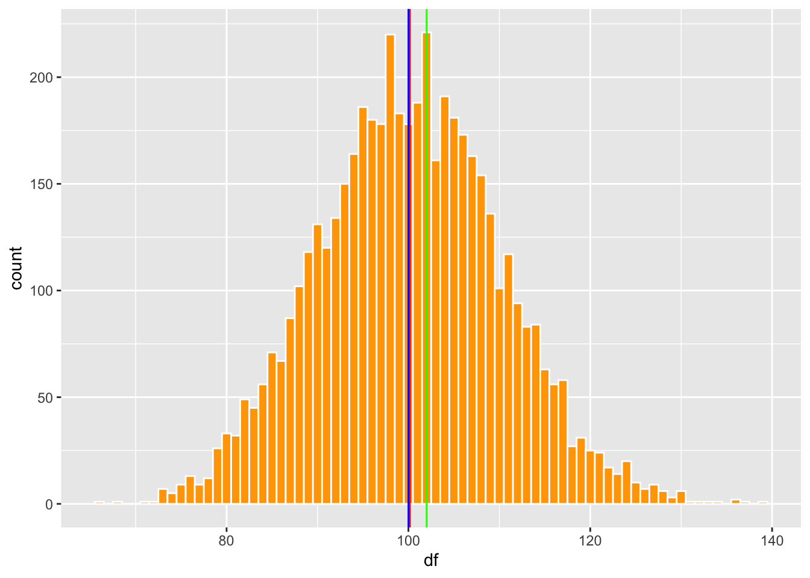
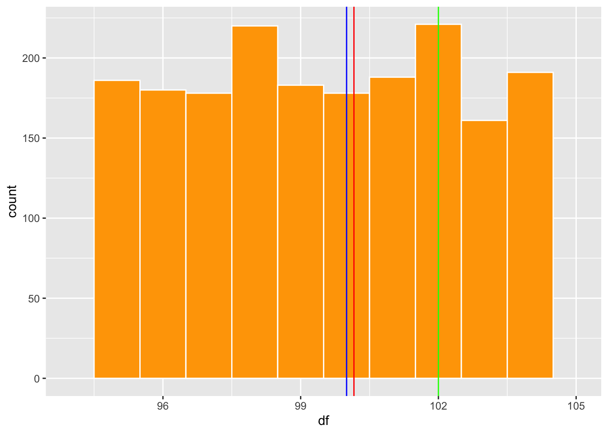
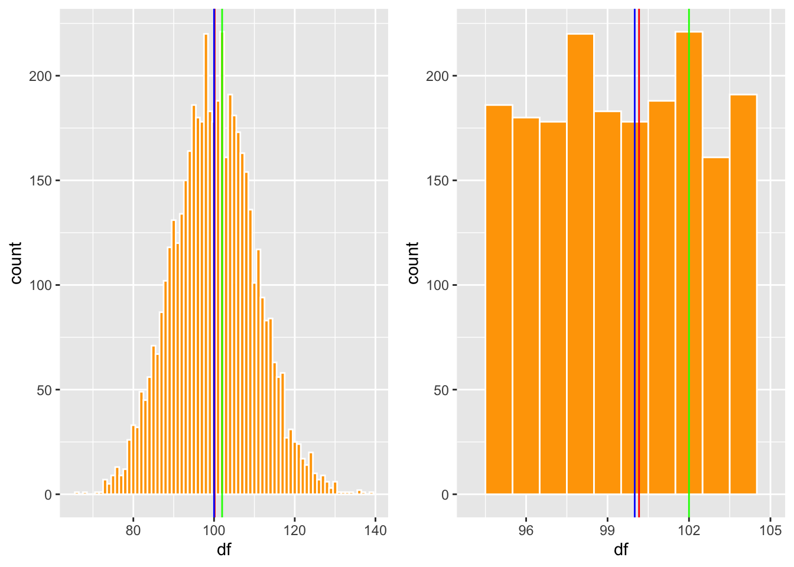
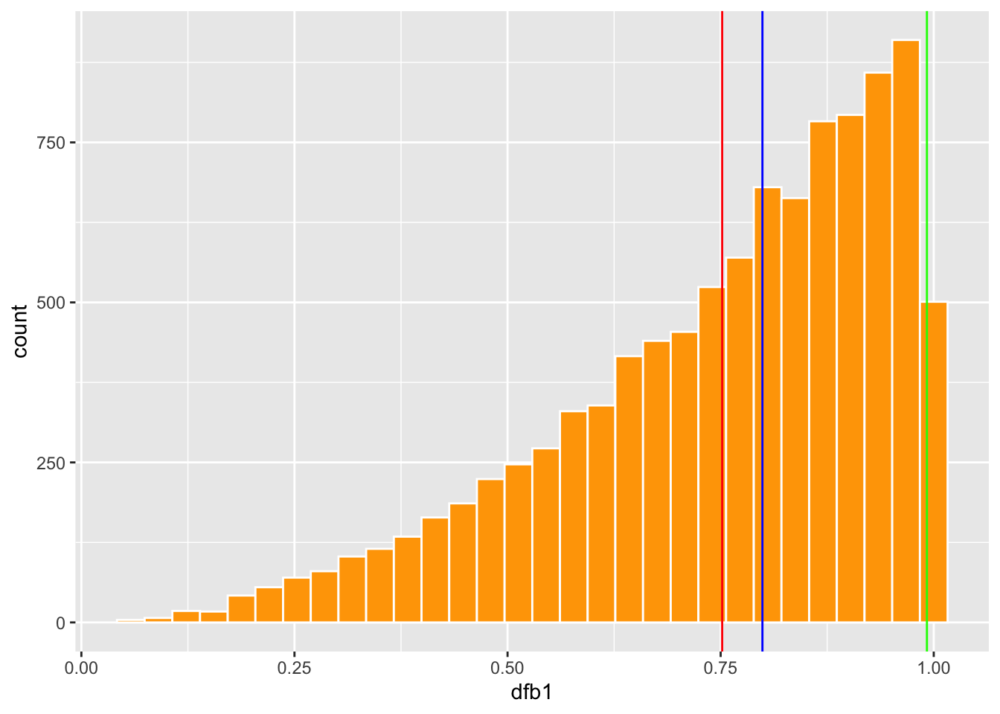
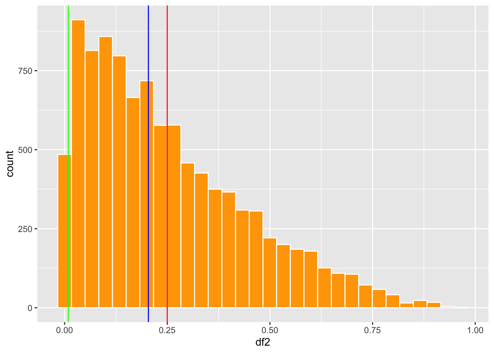
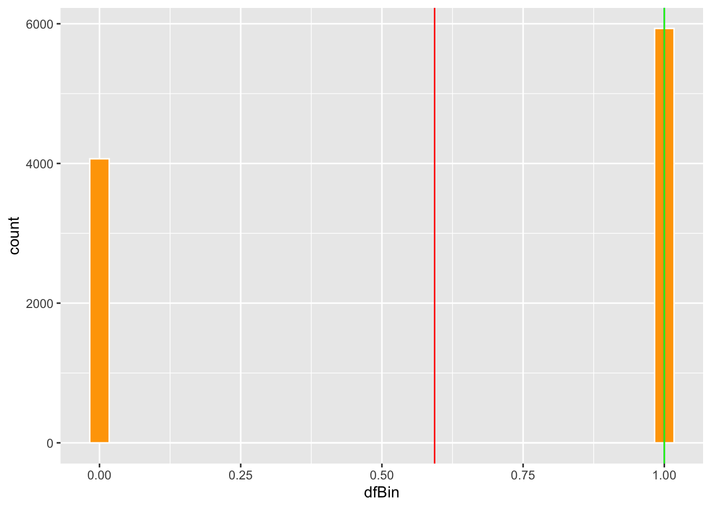

Capítulo 6 Medidas de tendencia central
Fecha de la última revisión
## [1] "2026-08-01"

library(ggplot2)
library(Hmisc)
library(gridExtra) # Un paquete para organizar las figuras de ggplot2Las medidas de tendencia central se llaman así porque su valor tiende a ubicarse en el centro de la distribución de los datos. Hay por lo menos 16 tipos de medidas de tendencia central (https://en.wikipedia.org/wiki/Central_tendency). En este curso mencionaremos solamente 3 de ellas.
- El promedio aritmético
- La mediana
- La moda
El promedio (media) es la suma de los valores dividida entre \(n\). La mediana es el valor central de los datos ordenados. La moda es el valor que aparece con más frecuencia.
El promedio aritmético se usa desde la antigüedad, pero se volvió central en la ciencia con Gauss y Laplace al promediar mediciones astronómicas. El término mediana lo popularizó Francis Galton en 1881 como una medida robusta del centro.
6.1 Calculando el promedio
mean(x) — promedio aritmético.
-
Qué hace: suma los valores de
xy los divide entre la cantidad de datos. -
Cuidado: es sensible a los valores atípicos; si hay
NA, usamean(x, na.rm = TRUE).
Aquí creamos una lista de datos con la función c( ) y con la función mean podemos calcular el promedio. El promedio es la suma de los valores dividida por la cantidad de valores en la lista.
\[\bar{x}=\frac{\sum_{i=1}^{n}x_i}n\]
## [1] 56.2 Cuando el promedio no está localizado en el centro
Digamos que yo tengo la cantidad de semillas producida por 11 plantas, la primera no produjo semillas, la segunda 2 semillas y así sucesivamente, hasta la última que produjo 1000 semillas. Nota que en este caso el promedio no se encuentra en el centro de los datos, por lo que NO es un buen indicador de la tendencia central. Cuando esto ocurre uno no debería usar el promedio para describir la tendencia central de los datos.
El promedio es muy sensible a valores atípicos (outliers) y a las distribuciones sesgadas: un solo valor extremo puede arrastrarlo lejos del centro. En esos casos la mediana describe mejor la tendencia central.
## [1] 95
mean(x)## [1] 956.3 La mediana
median(x) — mediana.
-
Qué hace: ordena los datos y devuelve el valor central (o el promedio de los dos centrales si
nes par). - Ventaja: es robusta a los valores atípicos, por eso describe mejor el centro en distribuciones sesgadas.
6.4 Con n impares
Cuando el promedio no es un índice adecuado de la tendencia central tenemos dos alternativas: la mediana y la moda. La mediana es el valor en el centro después de haber organizado los datos del más pequeño al más grande.
\[\text{Mediana} = x_{\left(\frac{n+1}{2}\right)}\]
Donde n es la cantidad de valores ordenados del más pequeño al más grande; se selecciona el valor que queda en el centro. Lo que hace la función median() es poner los valores en orden y determinar cuál es el valor central. Aquí, para demostrar lo que hace la función: 1) creo una lista de valores, 2) los pongo en orden y 3) al mirarlos en orden vemos que el valor 6 queda en el centro. Pero este paso no es necesario, ya que la función median() lo hace automáticamente.
## [1] 0 1 2 3 4 5 6 7 23 24 26 247
## [13] 43626
length(b)## [1] 13
median(b)## [1] 6
mean(b)## [1] 3382.615## [1] 50009.5
median(muchos)## [1] 50000.56.5 Ejemplo # 2 de mediana
datos=c(1:100)
datos## [1] 1 2 3 4 5 6 7 8 9 10 11 12 13 14 15 16 17 18
## [19] 19 20 21 22 23 24 25 26 27 28 29 30 31 32 33 34 35 36
## [37] 37 38 39 40 41 42 43 44 45 46 47 48 49 50 51 52 53 54
## [55] 55 56 57 58 59 60 61 62 63 64 65 66 67 68 69 70 71 72
## [73] 73 74 75 76 77 78 79 80 81 82 83 84 85 86 87 88 89 90
## [91] 91 92 93 94 95 96 97 98 99 100
median(datos)## [1] 50.5## [1] 4.35 13.00 19.00 28.20 37.00 46.00
median(km)## [1] 23.66.6 Con n pares
Cuando hay una cantidad par de datos, se suman los dos valores centrales y se calcula su promedio.
\[\text{Mediana} = \frac{1}{2}\left( x_{\left(\frac{n}{2}\right)} + x_{\left(\frac{n}{2}+1\right)} \right)\] En el siguiente caso tanto el valor 6 como el 7 quedan en el centro, por lo que la mediana es el promedio de estos dos valores.
## [1] 0 1 2 3 4 5 6 7 7 23 24 26
## [13] 247 43626
median(b)## [1] 6.56.7 La moda
La moda es el valor más común. Para encontrar la moda hay que crear una función, ya que R base no incluye una para ello.
# Create mode() function to calculate mode
mode <- function(x, na.rm = FALSE) {
if(na.rm){ #if na.rm is TRUE, remove NA values from input x
x = x[!is.na(x)]
}
val <- unique(x)
return(val[which.max(tabulate(match(x, val)))])
}Ya pueden usar mode() para encontrar la moda del conjunto de datos. Vemos que el valor 7 es el más común en la lista.
mode(b)## [1] 7## [1] 26.8 Cuando es que el promedio, mediana y moda son iguales?
Los tres valores de tendencia central coinciden (o casi) cuando la distribución es simétrica, como la distribución normal en forma de campana. Aquí preparo una lista de datos con una distribución aproximadamente simétrica y evaluamos dónde quedan los tres valores. Se usa la función rpois (distribución de Poisson, que con una media grande se aproxima a la normal) para crear un conjunto de 5000 datos al azar con una media de 100.
df=rpois(5000, 100)
df## [1] 104 100 108 94 103 99 99 113 128 96 97 109 105 96 115 100 107 104
## [19] 101 103 102 105 96 102 104 95 117 103 91 105 105 95 85 97 107 84
## [37] 107 108 110 93 109 113 112 106 103 97 106 93 100 98 102 108 98 95
## [55] 103 96 108 95 109 120 92 97 92 75 97 91 99 66 106 101 108 98
## [73] 104 89 93 83 117 101 85 124 91 96 87 107 87 105 102 119 100 99
## [91] 110 111 111 101 112 112 101 102 101 111 109 91 106 115 107 109 87 127
## [109] 108 106 93 83 86 104 105 99 103 92 89 93 81 98 107 103 89 97
## [127] 102 101 91 100 108 89 117 109 99 92 108 116 97 100 118 104 94 115
## [145] 96 89 92 102 105 102 94 102 118 103 107 120 83 93 98 96 122 118
## [163] 95 108 114 104 96 109 87 87 92 92 97 111 115 117 99 123 83 103
## [181] 90 116 98 104 107 104 92 112 93 92 108 80 99 104 101 97 100 100
## [199] 113 94 91 108 92 116 81 106 100 113 116 98 104 111 100 88 94 92
## [217] 95 106 115 101 103 116 88 101 91 88 121 105 109 119 80 98 96 108
## [235] 93 105 90 90 100 90 95 105 97 96 112 99 93 108 103 104 73 87
## [253] 95 101 90 88 91 106 90 88 101 90 89 83 103 106 109 82 100 93
## [271] 102 107 105 84 115 107 102 95 121 84 100 105 88 105 100 93 114 99
## [289] 117 100 98 93 98 106 88 90 91 103 103 80 102 111 86 107 103 125
## [307] 109 86 96 96 104 120 114 90 115 111 100 108 88 80 93 104 95 102
## [325] 88 103 94 122 117 99 94 100 121 102 101 88 123 99 95 88 91 94
## [343] 91 100 109 100 105 90 91 105 111 97 98 106 89 91 106 105 90 109
## [361] 87 88 96 95 99 126 101 114 94 106 110 104 100 104 88 93 92 102
## [379] 104 107 122 104 93 98 112 121 98 96 104 109 93 97 106 82 122 108
## [397] 82 99 103 117 99 108 94 111 101 111 98 93 80 99 98 98 103 107
## [415] 99 108 124 91 93 103 104 98 95 108 108 115 96 101 107 92 101 98
## [433] 94 116 121 90 104 90 95 103 94 114 94 124 107 96 98 86 116 99
## [451] 101 108 95 89 79 79 98 111 77 94 107 98 111 101 92 103 99 107
## [469] 102 92 111 105 100 109 111 92 104 107 121 108 111 88 92 105 88 108
## [487] 110 100 110 114 102 86 117 94 99 111 103 92 105 101 112 107 103 104
## [505] 85 101 105 103 102 87 121 89 117 125 87 97 98 105 99 102 106 110
## [523] 103 85 101 97 95 107 99 94 124 94 93 112 106 104 95 85 105 82
## [541] 101 116 119 86 105 110 93 101 86 82 111 100 94 101 119 102 98 108
## [559] 86 106 88 95 101 111 110 102 102 102 114 87 76 95 102 102 102 87
## [577] 99 85 107 107 125 89 100 102 109 99 105 86 103 109 89 93 109 97
## [595] 102 74 99 105 111 107 94 80 99 91 106 104 110 90 114 103 95 98
## [613] 100 85 88 94 90 81 101 95 113 94 104 100 104 102 86 94 97 79
## [631] 85 89 113 97 93 103 103 96 95 107 98 91 104 94 98 100 125 102
## [649] 103 110 101 99 98 109 104 116 115 94 83 87 85 81 89 103 103 89
## [667] 92 116 105 91 108 111 111 82 90 114 103 94 91 102 104 86 111 100
## [685] 111 95 114 89 96 100 92 86 117 96 93 110 105 88 102 90 100 105
## [703] 102 108 92 100 116 102 104 105 97 88 106 101 109 95 97 90 101 98
## [721] 109 96 91 83 96 116 109 105 107 94 102 97 110 106 107 113 98 101
## [739] 99 90 86 97 87 84 96 82 83 93 105 112 79 99 108 111 106 100
## [757] 114 99 113 99 94 87 101 98 85 100 110 105 108 99 79 92 103 93
## [775] 102 95 110 103 127 107 96 100 113 95 98 96 106 105 113 96 111 106
## [793] 115 99 99 99 102 112 95 106 103 108 110 81 92 104 82 93 98 95
## [811] 96 103 85 101 109 105 86 104 98 118 111 99 90 105 83 101 115 125
## [829] 95 105 100 89 95 104 97 106 106 109 114 95 92 88 85 102 92 101
## [847] 94 117 101 102 97 89 119 112 87 98 102 108 107 96 106 110 99 78
## [865] 109 100 108 106 115 104 106 98 120 92 106 98 82 107 102 99 90 114
## [883] 97 107 116 105 104 102 89 85 90 90 93 98 97 102 106 104 90 106
## [901] 122 98 90 114 98 74 103 88 106 111 97 105 104 107 95 117 98 97
## [919] 106 109 103 98 86 116 106 85 85 124 90 115 100 122 116 100 114 82
## [937] 89 101 107 87 96 101 115 108 118 108 115 87 95 91 94 95 94 109
## [955] 102 87 92 117 98 107 93 94 104 105 105 106 92 100 107 87 91 88
## [973] 93 110 101 98 89 88 77 115 114 108 93 101 89 100 86 87 106 107
## [991] 98 111 95 102 98 92 109 86 103 82 104 92 110 95 105 97 107 111
## [1009] 100 95 89 93 98 93 95 107 99 95 109 118 80 112 114 90 108 101
## [1027] 106 103 108 105 95 88 104 98 89 104 111 93 128 120 97 102 80 88
## [1045] 124 112 104 95 91 98 93 98 111 102 111 106 98 100 91 82 109 91
## [1063] 89 99 79 107 92 82 100 90 107 89 115 108 92 98 98 114 94 106
## [1081] 91 98 93 89 119 99 94 96 94 99 102 102 102 93 86 92 84 104
## [1099] 84 104 102 106 96 116 106 98 94 98 93 104 93 96 88 90 91 106
## [1117] 98 88 100 99 94 97 108 93 88 110 112 98 97 100 99 95 90 104
## [1135] 109 107 96 101 97 105 93 86 102 105 80 98 105 86 104 113 85 116
## [1153] 100 99 110 95 104 98 115 94 107 110 76 114 102 107 86 108 104 104
## [1171] 80 117 106 86 96 100 139 89 109 113 97 113 106 102 111 99 89 85
## [1189] 85 93 77 90 99 113 92 103 86 102 90 98 86 99 100 96 95 105
## [1207] 109 96 102 94 94 99 111 109 108 89 100 104 109 97 88 116 96 103
## [1225] 105 105 101 103 82 101 101 111 90 106 106 95 102 95 108 102 99 103
## [1243] 98 96 106 91 97 107 98 105 97 89 110 87 118 91 99 109 85 101
## [1261] 94 112 100 103 101 94 97 91 92 108 78 110 103 109 92 107 88 97
## [1279] 91 104 87 97 112 102 108 94 75 112 104 100 107 102 87 112 113 86
## [1297] 102 107 97 99 108 91 92 82 106 112 95 112 99 103 113 106 79 103
## [1315] 90 97 114 93 121 83 98 115 100 99 98 95 123 99 114 122 102 127
## [1333] 91 114 98 105 105 119 102 114 109 105 100 92 94 92 99 92 103 109
## [1351] 86 117 86 99 89 82 107 96 88 104 111 90 80 100 108 115 120 97
## [1369] 108 82 103 90 113 107 102 101 91 96 89 112 100 106 116 108 93 102
## [1387] 102 90 95 99 97 116 82 104 88 80 98 87 114 90 109 97 106 104
## [1405] 98 96 99 93 92 89 84 104 90 101 101 89 106 99 100 97 91 104
## [1423] 107 83 97 92 105 117 76 115 90 124 107 100 85 95 100 89 105 86
## [1441] 103 92 92 96 94 105 93 73 89 112 113 105 108 87 101 100 101 100
## [1459] 103 107 103 83 80 95 102 115 103 114 95 111 112 106 100 93 87 102
## [1477] 106 112 108 129 83 87 96 107 100 112 111 90 88 88 80 103 88 87
## [1495] 114 123 96 101 103 111 92 101 115 105 101 96 109 101 95 112 96 112
## [1513] 95 98 114 97 100 105 107 95 103 93 97 104 98 97 100 103 90 110
## [1531] 98 95 99 109 106 82 96 96 104 95 87 105 90 94 90 116 122 119
## [1549] 91 100 100 93 105 109 101 91 86 96 95 112 95 96 111 104 94 100
## [1567] 122 92 94 97 99 98 87 76 91 111 86 99 107 101 103 106 99 95
## [1585] 107 100 115 98 100 90 110 100 96 98 98 88 96 94 90 100 92 108
## [1603] 112 99 100 104 112 86 95 95 115 76 73 111 105 104 94 104 99 101
## [1621] 87 103 116 91 87 110 88 100 110 111 103 91 104 94 105 115 97 108
## [1639] 87 107 101 111 106 95 102 116 82 86 104 107 99 91 99 114 105 96
## [1657] 115 85 116 120 105 90 93 100 104 94 107 97 103 109 122 89 97 95
## [1675] 101 97 112 116 106 92 84 91 108 106 99 107 106 124 111 105 91 115
## [1693] 104 96 96 104 103 92 92 98 128 76 80 103 97 102 97 104 117 126
## [1711] 102 90 110 92 100 76 105 97 90 106 101 108 98 105 116 116 111 92
## [1729] 105 84 78 100 102 92 83 111 94 89 79 100 96 117 112 90 112 97
## [1747] 92 113 93 116 104 89 117 102 99 101 96 91 110 92 92 113 107 85
## [1765] 104 94 97 95 87 107 96 94 114 85 88 119 107 102 96 109 111 103
## [1783] 86 109 107 89 88 103 108 115 79 89 124 106 104 91 98 100 108 94
## [1801] 90 108 90 90 90 123 109 102 95 104 99 108 111 100 97 87 93 98
## [1819] 93 100 105 115 101 107 111 107 107 99 99 124 117 90 108 99 81 101
## [1837] 94 97 111 95 105 111 89 114 107 88 99 106 96 102 110 81 98 83
## [1855] 98 107 102 95 89 89 108 81 111 113 95 91 97 94 108 91 83 95
## [1873] 83 86 94 98 94 91 108 101 92 96 126 108 87 121 104 100 108 97
## [1891] 103 98 116 115 100 114 104 111 105 95 96 87 105 94 71 110 115 112
## [1909] 98 98 83 96 89 114 102 86 101 113 102 104 79 118 107 92 94 104
## [1927] 89 92 104 110 97 96 106 104 98 102 87 101 120 101 113 106 98 127
## [1945] 106 122 109 136 101 98 98 84 105 85 92 104 112 109 75 103 98 89
## [1963] 99 109 112 91 99 96 106 97 125 104 86 91 102 106 96 95 99 90
## [1981] 96 98 83 108 100 105 106 107 84 96 104 95 112 124 99 93 111 96
## [1999] 92 130 109 96 89 104 119 101 85 84 97 94 104 110 101 99 115 81
## [2017] 98 105 87 92 105 114 95 96 97 81 102 113 94 107 87 103 93 99
## [2035] 96 90 91 101 97 93 97 95 114 103 97 97 95 111 78 116 99 96
## [2053] 99 114 91 105 114 100 109 95 105 107 82 89 104 95 92 97 80 111
## [2071] 92 97 118 75 112 83 98 118 110 106 84 91 93 118 94 113 109 103
## [2089] 105 110 102 104 103 99 99 113 98 96 100 108 94 101 97 110 109 121
## [2107] 80 91 103 103 118 108 117 97 109 103 82 120 107 99 93 97 106 98
## [2125] 93 102 101 88 89 109 101 114 95 86 111 111 92 117 102 124 111 106
## [2143] 109 93 91 93 108 115 97 105 120 111 109 105 92 105 98 116 94 105
## [2161] 95 109 88 109 105 102 95 102 98 89 127 97 89 99 98 101 105 90
## [2179] 112 97 103 109 114 105 87 96 91 101 78 105 103 89 93 105 105 120
## [2197] 103 98 102 108 113 91 79 113 106 96 84 96 99 91 112 105 106 105
## [2215] 113 102 123 89 119 81 112 105 126 107 99 108 88 93 95 121 110 108
## [2233] 98 103 106 98 111 89 107 100 96 103 117 96 108 123 95 93 95 115
## [2251] 95 99 88 99 98 105 82 113 100 95 96 108 104 103 98 117 94 101
## [2269] 107 83 97 95 100 87 84 112 94 100 98 101 82 114 102 106 106 104
## [2287] 107 90 91 114 98 96 98 110 90 96 103 106 83 102 92 91 100 124
## [2305] 100 94 102 110 98 83 89 107 109 113 97 94 109 97 89 90 82 99
## [2323] 100 100 99 101 82 101 102 94 98 103 98 99 114 92 100 98 103 95
## [2341] 102 93 98 92 118 89 107 99 95 91 93 94 87 108 95 127 92 97
## [2359] 108 101 107 100 95 84 101 103 95 109 94 109 104 111 101 85 96 124
## [2377] 106 124 103 97 107 94 86 100 101 99 118 104 95 96 97 99 93 96
## [2395] 106 91 100 105 101 92 108 113 117 95 98 89 109 104 114 92 85 95
## [2413] 83 100 100 101 112 89 103 89 84 84 83 82 113 85 113 113 105 88
## [2431] 102 103 75 104 96 85 112 109 115 83 100 106 94 112 111 105 110 108
## [2449] 95 94 82 113 101 92 78 101 94 109 106 95 106 87 98 90 104 102
## [2467] 106 97 107 104 90 85 98 85 113 100 96 92 94 107 106 88 106 98
## [2485] 88 89 100 116 102 101 96 110 83 131 101 106 98 90 97 109 94 113
## [2503] 89 86 95 109 111 96 88 127 84 95 104 119 116 107 88 94 101 110
## [2521] 114 99 98 107 105 88 88 93 112 112 99 102 107 96 99 110 102 98
## [2539] 105 125 110 78 104 98 96 111 87 93 102 101 89 99 94 99 87 79
## [2557] 92 88 114 102 99 92 79 95 92 101 115 111 110 110 101 84 97 89
## [2575] 96 119 112 86 94 101 106 96 80 103 83 91 98 94 102 105 94 105
## [2593] 94 101 93 108 79 92 102 99 98 87 109 98 109 100 98 105 88 111
## [2611] 98 110 92 97 114 104 99 89 101 111 119 109 90 102 100 98 98 98
## [2629] 105 98 93 85 103 115 95 81 101 102 109 96 98 96 102 93 94 101
## [2647] 97 84 100 120 111 93 111 112 102 90 100 100 95 97 89 102 112 75
## [2665] 93 95 95 96 117 107 97 110 119 109 92 107 105 102 93 94 108 103
## [2683] 93 115 85 114 85 98 105 101 109 91 99 89 83 109 98 101 113 106
## [2701] 113 93 98 104 114 100 89 112 79 109 93 91 73 96 100 98 87 85
## [2719] 99 102 97 84 93 109 85 104 122 99 90 109 113 98 76 102 116 88
## [2737] 102 109 81 99 116 102 93 93 110 116 106 88 113 104 119 119 88 101
## [2755] 104 107 91 114 87 101 95 87 93 117 104 113 103 112 106 93 96 108
## [2773] 89 87 100 102 129 99 97 116 91 90 88 102 89 105 88 86 111 101
## [2791] 122 108 94 105 92 115 108 101 106 94 105 102 96 76 101 104 91 106
## [2809] 96 111 96 107 88 104 101 93 117 107 93 113 101 109 107 88 115 92
## [2827] 96 99 87 94 91 110 85 100 72 95 100 117 96 110 111 98 97 101
## [2845] 106 97 96 100 97 112 108 94 100 93 113 107 120 121 103 116 109 90
## [2863] 90 92 119 88 94 93 117 101 127 98 126 105 85 99 107 108 110 104
## [2881] 104 102 97 106 89 100 96 94 102 101 104 104 98 108 100 107 91 104
## [2899] 109 90 98 92 116 108 106 106 91 111 105 86 102 95 88 94 102 83
## [2917] 84 96 90 105 103 93 106 97 111 85 97 101 87 104 94 103 101 99
## [2935] 95 115 99 97 108 94 110 94 101 107 83 94 98 96 111 100 90 87
## [2953] 81 94 97 112 112 89 94 119 84 113 101 88 97 82 101 104 98 97
## [2971] 118 110 104 102 105 109 116 106 111 95 88 106 105 104 117 91 90 122
## [2989] 89 102 96 110 120 94 92 85 94 117 101 102 92 111 136 91 110 75
## [3007] 97 112 85 108 97 101 89 88 121 100 113 103 107 106 83 102 106 95
## [3025] 117 85 97 114 107 99 80 99 113 108 98 95 94 101 102 96 85 88
## [3043] 97 98 99 108 103 98 100 96 90 97 120 104 90 91 109 108 103 96
## [3061] 79 106 110 94 111 85 100 109 86 99 93 99 95 108 104 100 102 107
## [3079] 87 112 113 98 97 102 83 107 109 85 109 97 94 93 80 102 105 88
## [3097] 89 106 102 122 117 97 84 121 111 98 83 112 93 110 99 105 111 106
## [3115] 95 77 95 108 100 104 105 96 92 82 103 117 106 97 93 98 121 90
## [3133] 101 106 108 99 75 92 112 97 79 105 108 110 90 108 104 85 112 113
## [3151] 102 103 103 112 111 95 105 109 92 106 84 96 97 109 103 106 84 114
## [3169] 105 107 86 87 107 104 97 112 102 91 90 101 102 91 94 96 88 96
## [3187] 96 90 108 96 107 95 92 85 111 90 87 100 95 89 96 115 103 108
## [3205] 87 80 104 104 95 115 103 96 88 99 104 73 86 103 130 88 105 77
## [3223] 101 92 93 95 96 97 113 89 101 106 109 103 99 91 103 107 108 112
## [3241] 101 111 102 91 104 107 110 114 108 81 83 104 95 90 110 103 104 104
## [3259] 111 111 106 107 98 110 106 100 94 102 104 114 111 92 95 99 102 84
## [3277] 76 86 103 102 110 102 104 98 98 117 104 111 103 95 90 85 106 82
## [3295] 79 90 103 91 109 103 97 90 79 84 90 96 100 99 114 100 88 123
## [3313] 102 105 85 89 100 82 108 84 88 105 123 93 91 97 95 92 85 90
## [3331] 111 100 102 109 113 105 83 90 97 102 101 91 91 121 100 99 102 117
## [3349] 96 88 107 109 103 87 92 95 94 105 105 74 95 93 94 99 90 118
## [3367] 108 107 95 106 82 103 112 99 84 98 122 113 81 89 93 104 95 75
## [3385] 105 90 94 94 97 102 120 101 95 107 86 110 85 108 81 101 90 114
## [3403] 94 106 102 94 96 112 102 99 86 96 105 124 86 92 106 98 108 83
## [3421] 86 114 109 102 80 108 91 112 82 93 107 99 107 95 100 107 84 91
## [3439] 101 98 118 99 107 100 100 101 97 107 107 93 125 89 104 112 108 89
## [3457] 111 87 110 90 93 94 101 102 91 121 100 108 93 99 122 108 88 103
## [3475] 112 100 90 112 106 98 88 93 108 98 106 111 104 93 114 93 93 115
## [3493] 94 106 99 83 115 105 119 110 101 94 100 95 87 97 106 108 89 114
## [3511] 90 93 102 104 89 104 112 114 119 102 113 96 99 95 96 97 94 90
## [3529] 92 104 91 94 119 90 97 92 101 91 85 100 104 104 100 96 101 85
## [3547] 94 99 105 105 90 116 105 95 84 107 120 99 100 127 98 93 88 106
## [3565] 95 113 105 109 112 137 104 81 100 121 98 113 82 79 107 103 105 85
## [3583] 98 92 119 102 108 95 84 99 101 96 109 94 110 105 91 106 81 101
## [3601] 84 88 101 113 97 106 102 100 86 114 93 98 93 99 91 102 105 98
## [3619] 108 73 90 92 95 99 112 102 79 103 125 101 84 104 97 124 98 93
## [3637] 100 96 105 97 104 97 111 109 115 99 120 79 103 126 97 108 119 86
## [3655] 86 98 114 111 105 109 109 101 91 85 106 104 81 112 85 106 98 118
## [3673] 89 87 96 88 111 96 105 78 106 88 107 101 97 94 101 117 114 104
## [3691] 105 114 87 96 103 80 102 103 97 114 90 107 104 89 98 115 82 101
## [3709] 119 88 96 116 89 97 108 106 107 98 104 100 102 98 116 110 90 112
## [3727] 89 96 68 106 84 103 89 117 96 110 98 93 102 96 99 86 113 107
## [3745] 107 95 98 98 84 94 105 110 103 97 99 98 114 91 99 109 109 91
## [3763] 113 113 89 102 91 113 103 105 94 94 99 91 103 97 103 117 104 99
## [3781] 83 106 107 103 113 104 95 98 110 117 111 109 101 102 76 118 126 76
## [3799] 90 100 96 96 108 95 109 98 86 111 92 85 111 80 92 102 107 90
## [3817] 121 102 104 113 100 112 103 103 86 104 108 94 110 93 102 82 106 96
## [3835] 101 105 105 101 78 112 107 89 103 81 99 98 91 99 101 93 104 108
## [3853] 89 91 114 100 103 98 93 109 94 113 111 95 117 118 78 115 88 80
## [3871] 85 107 106 113 102 105 105 110 98 90 91 113 109 94 96 97 100 79
## [3889] 102 106 105 101 104 98 109 104 106 94 87 102 103 92 99 95 101 92
## [3907] 106 102 107 96 89 101 109 107 96 104 105 104 99 115 101 98 104 96
## [3925] 101 109 102 97 92 94 96 95 102 91 102 129 116 112 95 97 105 95
## [3943] 104 110 110 102 101 99 120 95 100 112 86 100 104 117 99 106 91 112
## [3961] 99 100 97 86 93 111 114 87 94 107 123 106 98 85 118 114 93 104
## [3979] 108 110 104 95 108 92 103 92 116 92 102 101 105 103 88 130 105 96
## [3997] 116 103 104 96 93 92 96 95 97 94 100 88 113 96 97 94 87 88
## [4015] 93 90 102 116 104 93 121 104 105 117 87 89 81 109 111 95 114 94
## [4033] 106 77 113 84 110 93 80 96 86 93 114 107 106 83 103 94 104 124
## [4051] 115 82 101 102 91 111 103 111 97 88 103 101 90 91 112 114 98 99
## [4069] 92 83 89 107 82 117 87 102 95 92 100 90 90 101 105 104 98 95
## [4087] 111 100 103 103 96 103 91 98 92 103 108 103 99 108 79 100 90 110
## [4105] 80 110 95 97 95 102 97 114 106 102 96 102 114 104 107 105 92 109
## [4123] 102 106 94 102 82 101 97 90 98 105 115 98 86 87 107 109 101 110
## [4141] 128 95 89 101 101 106 91 120 91 105 97 97 88 103 105 101 92 107
## [4159] 100 84 105 106 104 98 94 87 87 101 99 89 88 102 92 99 95 84
## [4177] 91 96 90 84 99 119 110 111 103 98 108 97 93 94 89 97 110 92
## [4195] 132 87 90 98 84 98 114 108 104 97 96 99 91 102 107 94 73 99
## [4213] 106 95 95 115 105 108 84 102 90 107 110 109 89 100 87 90 84 90
## [4231] 90 116 89 108 104 81 116 121 101 121 78 114 81 105 101 106 97 97
## [4249] 108 109 100 106 113 108 110 109 106 85 101 98 105 102 110 92 95 103
## [4267] 107 112 97 95 100 103 107 110 97 99 92 91 97 104 106 109 116 108
## [4285] 95 90 97 102 94 99 110 96 104 113 107 101 99 107 90 87 95 95
## [4303] 123 107 87 117 113 102 120 107 89 123 83 89 114 117 105 96 105 92
## [4321] 100 86 76 92 105 94 118 99 111 106 89 119 86 89 108 107 93 77
## [4339] 99 94 109 98 88 98 117 95 117 100 103 101 87 102 110 103 112 93
## [4357] 95 97 104 86 90 100 105 85 99 102 102 104 103 98 81 102 134 89
## [4375] 97 93 97 93 116 95 99 101 101 95 90 101 107 103 87 87 99 98
## [4393] 105 98 96 124 116 78 105 96 98 109 91 108 109 116 107 82 98 116
## [4411] 102 97 99 101 100 96 94 95 130 106 88 107 130 85 109 109 110 102
## [4429] 93 102 89 99 87 102 80 94 93 110 102 93 94 108 81 96 108 93
## [4447] 108 106 113 102 101 104 99 88 102 89 133 105 90 112 108 107 109 92
## [4465] 94 94 109 80 108 104 94 100 96 108 92 118 96 89 105 91 114 84
## [4483] 117 89 90 123 87 112 105 94 114 101 103 95 117 101 105 106 106 111
## [4501] 105 91 107 97 94 105 96 119 102 90 97 80 100 108 113 94 97 102
## [4519] 97 101 101 110 83 95 112 100 84 94 101 130 115 112 109 102 84 107
## [4537] 98 101 107 84 95 95 104 110 81 104 82 82 105 102 119 92 96 87
## [4555] 124 106 94 103 102 91 104 96 89 93 99 89 110 86 90 96 104 109
## [4573] 110 96 85 84 77 102 96 102 84 121 108 91 102 107 107 113 91 85
## [4591] 91 111 98 106 106 103 115 100 93 113 112 93 110 98 119 109 104 102
## [4609] 100 114 104 95 109 97 94 100 86 104 96 112 104 99 107 94 81 104
## [4627] 91 102 97 105 89 98 98 74 95 92 85 103 113 102 98 92 92 107
## [4645] 103 88 102 82 115 121 105 92 108 88 91 117 98 111 88 106 95 96
## [4663] 99 99 91 101 102 115 106 87 108 96 97 92 108 89 108 102 102 88
## [4681] 104 85 95 93 111 93 102 107 123 90 100 98 113 96 89 108 81 106
## [4699] 104 108 93 93 106 114 89 111 109 92 89 98 84 110 108 93 112 105
## [4717] 103 93 105 93 81 101 94 97 110 102 81 98 87 107 97 90 82 104
## [4735] 93 107 115 98 99 95 95 84 99 94 93 111 113 94 96 98 108 98
## [4753] 114 82 107 109 101 105 108 98 98 102 100 97 102 91 114 90 95 114
## [4771] 104 100 106 120 90 106 89 97 102 107 96 95 103 109 86 93 86 111
## [4789] 92 97 95 118 99 96 116 88 102 109 93 106 94 115 112 87 112 91
## [4807] 100 90 96 101 88 125 102 114 116 110 98 108 100 109 105 109 88 106
## [4825] 109 106 104 97 114 90 128 106 106 95 99 95 108 96 100 94 93 88
## [4843] 92 90 79 96 96 93 108 85 112 95 94 115 98 93 117 90 108 85
## [4861] 105 98 95 110 96 95 107 98 111 92 94 113 117 84 102 77 110 98
## [4879] 79 100 98 82 100 119 98 106 112 82 95 120 113 106 88 83 118 98
## [4897] 103 113 99 98 93 97 97 110 111 92 117 107 111 102 94 98 88 97
## [4915] 120 94 80 95 99 128 101 115 101 108 99 84 117 88 91 84 93 109
## [4933] 113 106 104 93 115 81 103 118 96 100 91 107 108 97 117 99 111 80
## [4951] 83 99 85 97 100 102 108 94 89 108 95 104 87 100 96 74 120 106
## [4969] 92 87 103 87 80 106 98 102 118 113 105 85 108 82 93 104 101 115
## [4987] 106 93 105 107 92 88 101 85 101 109 117 102 112 98
df1=data.frame(df)
head(df1)## df
## 1 104
## 2 100
## 3 108
## 4 94
## 5 103
## 6 99Lo que uno observa es que los tres valores son muy cercanos entre sí.
mean(df1$df)## [1] 100.1602
median(df1$df)## [1] 100
mode(df1$df)## [1] 102Podemos visualizar estos datos usando dos gráficos. En el de la izquierda se ve la distribución con las tres líneas (promedio, mediana y moda). En el de la derecha se observa la misma información pero solo los valores entre 94 y 105. Se ve que la mediana y el promedio son casi iguales y la moda varía un poco (se encuentra donde la barra es más alta). Los tres valores quedan cerca del centro.
## [1] 102
library(ggplot2)
a=ggplot(df1, aes(df))+
geom_histogram(fill="orange", colour="white", binwidth = 1)+
geom_vline(aes(xintercept = pro), colour="red")+
geom_vline(aes(xintercept = med), colour="blue")+
geom_vline(aes(xintercept = mod99), colour="green")+
theme(legend.position = "none")
a
library(ggplot2)
b=ggplot(df1, aes(df))+
geom_histogram(fill="orange", colour="white", binwidth = 1)+
geom_vline(aes(xintercept = pro), colour="red")+
geom_vline(aes(xintercept = med), colour="blue")+
geom_vline(aes(xintercept = mod99), colour="green")+
xlim(94,105)+
theme(legend.position = "none")
b
gridExtra::grid.arrange(a,b, ncol=2)
6.9 Distribución cuando los tres valores de tendencia central no son iguales
En estas distribuciones (sesgadas) hay un exceso de valores pequeños o grandes. Esto hace que los tres índices de tendencia central no queden cerca unos de otros.
library(tidyverse)
dfb1=round(rbeta(10000, 3,1, ncp = 0),3)
dfb1=tibble(dfb1)
#head(dfb)
df2= round(rbeta(10000, 1,3, ncp = 0),3)
df2=tibble(df2)
#head(df2)- ¿Cuál es la línea del promedio, la moda y la mediana en cada gráfico?
mea=mean(dfb1$dfb1)
med=median(dfb1$dfb1)
mod=statip::mfv1(dfb1$dfb1)
meab=mean(df2$df2)
medb=median(df2$df2)
modb=statip::mfv1(df2$df2)
SesgadoDerecho=ggplot(dfb1, aes(dfb1))+
geom_histogram(fill="orange", colour="white")+
geom_vline(aes(xintercept = mea), colour="red")+
geom_vline(aes(xintercept = med), colour="blue")+
geom_vline(aes(xintercept = mod), colour="green")+
theme(legend.position = "none")
SesgadoIzquierda=ggplot(df2, aes(df2))+
geom_histogram(fill="orange", colour="white")+
geom_vline(aes(xintercept = meab), colour="red")+
geom_vline(aes(xintercept = medb), colour="blue")+
geom_vline(aes(xintercept = modb), colour="green")+
theme(legend.position = "none")
SesgadoDerecho
SesgadoIzquierda
library(ggpubr)
#ggarrange(c,d, nrow=2, ncol=1)
library(grid)
#grid.arrange(rectGrob(), rectGrob())
#marrangeGrob(c,d, nrow=2)
#c
#d
#library(scater)
#multiplot(c,d, ncol=2)6.10 Variables binomial
En el siguiente ejemplo podemos ver claramente que las medidas de tendencia central no son adecuadas.
Primero producimos un conjunto de datos que tiene solamente dos alternativas 0 y 1. Para facilitar los datos e imaginar lo que quiere decir estos datos que cuando es un 0 la persona no tiene hijos y cuando es un 1 tiene hijos.
dfBin=replicate(10000,rbinom(length(.6), size=1,prob =0.6))
dfBin=data.frame(dfBin)
head(dfBin)## dfBin
## 1 1
## 2 0
## 3 1
## 4 0
## 5 1
## 6 0Ahora vamos a producir el gráfico. Lo que uno observa es que el promedio está en el centro, cerca de 0.6, pero no hay ningún dato cerca de ese valor. El promedio no representa la “tendencia central” de esta distribución.
Con datos binarios (0/1), el promedio es en realidad una proporción (la fracción de unos). Las medidas de tendencia central no son apropiadas para describir este tipo de datos.
## [1] 0.5933
ggplot(dfBin, aes(dfBin))+
geom_histogram(fill="orange", colour="white")+
geom_vline(aes(xintercept = mea), colour="red")+
geom_vline(aes(xintercept = med), colour="blue")+
geom_vline(aes(xintercept = mod), colour="green")+
theme(legend.position = "none")
6.10.1 Preguntas de practica sobre medidas de tendencias central.
¿Cuando es que el promedio, mediana y moda son iguales?
¿Cuál es la moda de este conjunto de datos?
x=c(3,5,2,3,6,7,8,9, 1)
x## [1] 3 5 2 3 6 7 8 9 1- ¿Cuál es la mediana de este conjunto de datos? Estos son la cantidad de cursos.
y=c(3,5,2,3,6,7,8,9, 1)
y## [1] 3 5 2 3 6 7 8 9 1- ¿Cuál es la mediana de este conjunto de datos?
## [1] 1 2 3 3 5 6 6 7 8 9- Para describir la medida central de este conjunto de datos, ¿se debería usar el promedio, la mediana o la moda?
z=c(1,2,2,3,4,10, 100, 1000)
z## [1] 1 2 2 3 4 10 100 1000- ¿Cuál es la moda de los siguientes datos? Número de hijos que tienen los estudiantes universitarios.
Numero_hijos=c(1,0,0,0,0,0,0,0,0,0,1,3)
Numero_hijos## [1] 1 0 0 0 0 0 0 0 0 0 1 3